By listening to light, tracing motion, and trusting mathematics, humanity learns the universe without ever touching it.
Space is too far, too cold, and too dangerous for humans to explore directly—yet scientists know the temperatures of stars, the composition of distant planets, and even the age of the universe. This knowledge doesn’t come from guessing; it comes from carefully studying light, motion, gravity, and energy. Astronomy is less about going to space and more about reading the universe like a giant science book written in light.
Scientists use powerful tools and technologies to collect this information from afar. Telescopes on Earth and in space capture different types of light—visible, infrared, ultraviolet, and radio—each revealing unique details about celestial objects. By analyzing patterns in this light, such as shifts in color or brightness, scientists can determine how fast objects move, what they are made of, and how they change over time. Through observation, mathematics, and repeated testing, humanity continues to unlock the secrets of space without ever leaving the planet.
In addition, scientists rely on computer models and simulations to test their ideas about how the universe works. By combining observational data with physics laws, they can recreate the birth of stars, the collision of galaxies, and the evolution of planets over billions of years. These models help confirm theories, predict future discoveries, and turn distant observations into reliable scientific knowledge.
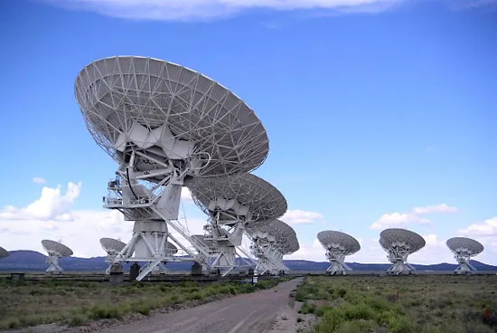
“To explore space is to understand ourselves.”
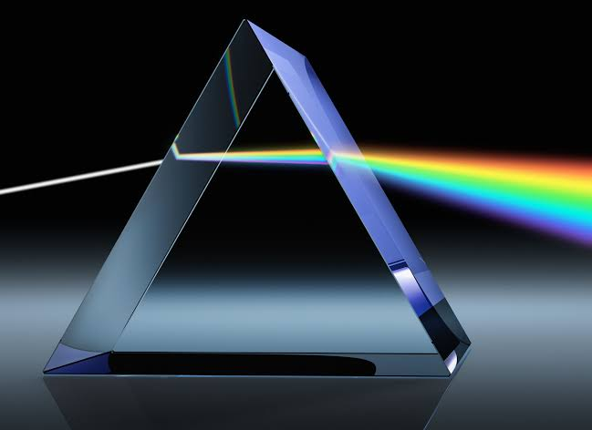
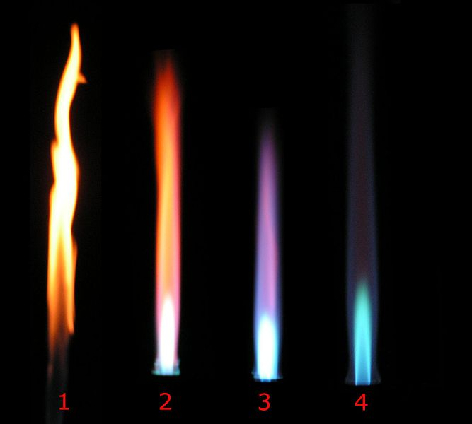
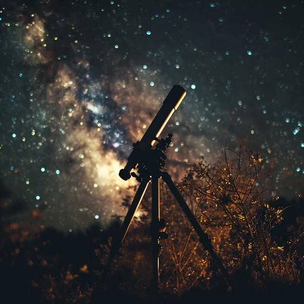
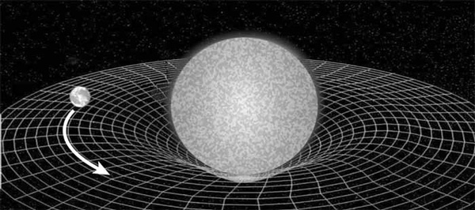
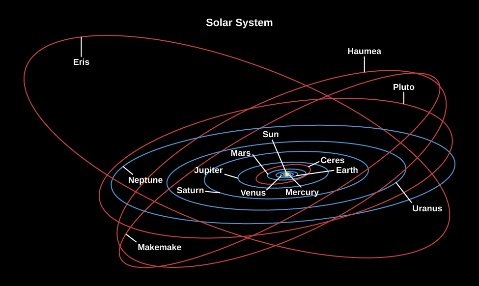
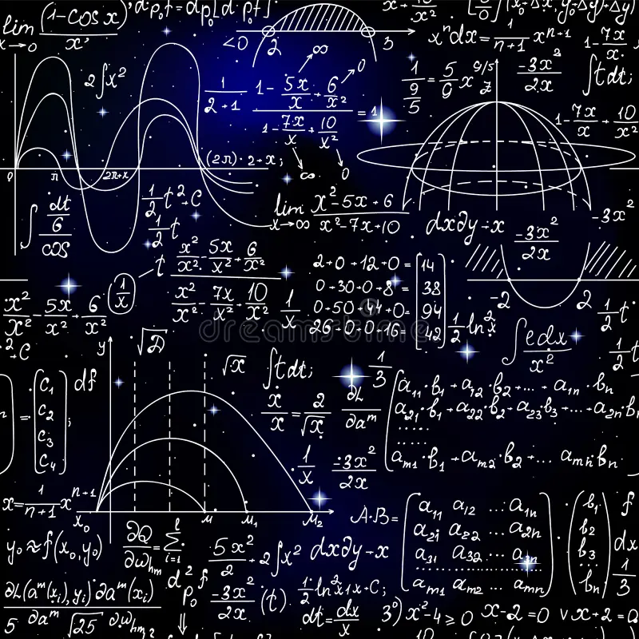
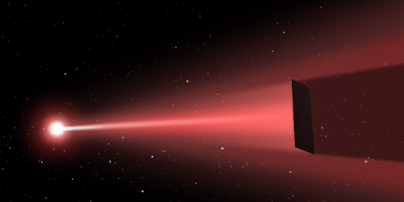
Almost everything scientists know about space comes from light. Stars, planets, and galaxies emit or reflect light, and each type of light carries hidden information. By splitting light into a spectrum, astronomers can identify what elements are present in stars—hydrogen, helium, oxygen, and more—without ever touching them.
Light also reveals how objects in space move and change over time. When a star or galaxy moves toward Earth, its light shifts slightly toward blue; when it moves away, the light shifts toward red. This effect, called redshift and blueshift, allows scientists to measure the speed and direction of celestial objects, helping them understand expanding galaxies, orbiting planets, and even the growth of the universe itself.
Beyond motion and composition, different types of light expose hidden parts of the universe. Infrared light can pass through cosmic dust to reveal newborn stars, while X-rays uncover violent events like black holes and supernova explosions. By studying the universe across the full spectrum of light—not just what human eyes can see—astronomers uncover a deeper, more complete picture of how space works.
Almost everything scientists know about the universe comes from light. Because space is vast and unreachable by physical travel alone, light serves as the primary messenger carrying information from distant stars, planets, and galaxies to Earth. Every cosmic object either emits or reflects light, sending signals across enormous distances and even across time itself. By collecting this light with telescopes, astronomers are able to study objects that are millions or billions of kilometers away without ever touching them.
Light exists across the electromagnetic spectrum, far beyond what the human eye can see. Radio waves, infrared, visible light, ultraviolet, X-rays, and gamma rays each reveal different aspects of the universe. When astronomers split light into a spectrum using instruments called spectrographs, they observe distinct patterns known as spectral lines. These lines act as chemical fingerprints, allowing scientists to identify elements such as hydrogen, helium, oxygen, and carbon inside stars and galaxies. Through this method, known as spectroscopy, astronomers can determine a star’s composition, temperature, motion, and age solely from its light.
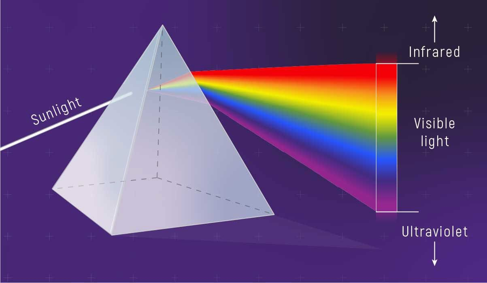
The process where white sunlight is split into its component colors as it passes through a glass prism
Because light travels at a finite speed, observing distant objects also means observing the past. Light from faraway galaxies may have begun its journey long before humans existed, preserving a record of cosmic history. In this way, telescopes function as time machines, enabling scientists to study how the universe has evolved over billions of years. Modern observatories that capture multiple wavelengths of light combine these signals to reveal hidden processes such as star formation, black holes, and the structure of galaxies. Through light, the universe communicates its story, transforming distant and invisible phenomena into measurable knowledge. Every element has a unique “light fingerprint,” which means stars can be chemically analyzed from billions of kilometers away, proving that the same elements found on Earth exist throughout the universe.
Spectroscopy is the scientific technique astronomers use to examine light collected from space and turn it into usable data. Instead of simply observing stars and galaxies as bright objects in the sky, scientists use specialized instruments called spectrographs to capture and analyze incoming light in detail. This method transforms distant light into measurable information, making it one of the most essential tools in modern astronomy.
Using spectroscopy, astronomers can extract precise physical data that cannot be obtained through images alone. The technique allows scientists to calculate temperatures, densities, and energy levels of celestial objects by applying physics and mathematical models to observed light patterns. Spectroscopy also enables accurate measurements across vast distances, allowing researchers to study objects billions of light-years away with remarkable precision.
Beyond studying stars and galaxies, spectroscopy plays a crucial role in cutting-edge space research. It is used to examine planetary atmospheres, monitor cosmic evolution, and test theories about the origin and future of the universe. By applying spectroscopy, astronomers move from simple observation to deep scientific understanding, turning light into one of the most powerful sources of knowledge about space.
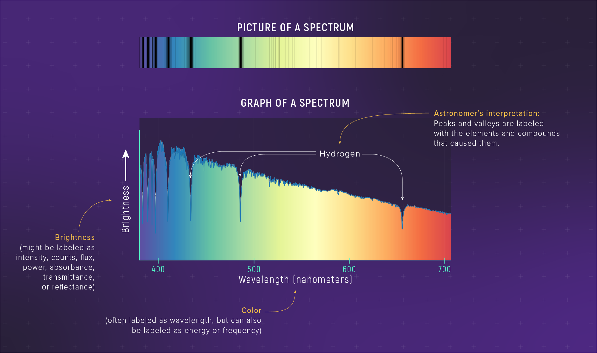
A rainbow bar showing starlight filtered into colors, with dark lines where light was absorbed by hydrogen
When light from stars and galaxies is separated into a spectrum, it reveals far more than just color. A spectrum spreads light into its component wavelengths, producing patterns of bright and dark lines that contain detailed information about the source. These patterns arise because atoms and molecules absorb or emit specific wavelengths of light when their electrons change energy levels. As a result, spectra act as coded messages that allow astronomers to study the universe in precise detail. There are three main types of spectra used in astronomy: continuous spectra, emission spectra, and absorption spectra. A continuous spectrum shows an unbroken range of colors, typically produced by hot, dense objects such as stars. Emission spectra appear as bright lines against a dark background and are produced by hot, glowing gases, such as nebulae. Absorption spectra occur when cooler gas lies in front of a light source, absorbing specific wavelengths and creating dark lines within a continuous spectrum. Each pattern provides unique information about the physical conditions of celestial objects.
By analyzing spectral lines, astronomers can determine the chemical composition of stars and galaxies, identify their temperatures, and measure how fast they are moving. Shifts in spectral lines reveal motion through the Doppler effect: when an object moves away, its spectral lines shift toward red wavelengths, and when it moves closer, they shift toward blue. This technique has been essential in discovering expanding galaxies and understanding the large-scale structure of the universe. Spectra transform light into measurable data, allowing scientists to uncover properties of distant objects that would otherwise remain invisible. Beyond basic identification, spectral analysis enables astronomers to probe the physical conditions and processes occurring within and around celestial objects. The broadening of spectral lines can reveal temperature, pressure, and turbulence within stellar atmospheres, while subtle line splitting provides evidence of strong magnetic fields through effects such as the Zeeman effect. High-precision spectroscopy also allows scientists to detect the presence of exoplanet atmospheres by analyzing the minute absorption features imprinted on starlight as it passes through planetary gases. Additionally, variations in spectral signatures across different regions of galaxies offer insight into stellar formation rates, chemical evolution, and interactions with interstellar matter. Through these detailed measurements, spectroscopy functions not only as a tool for observation, but as a method for reconstructing the physical and chemical history of the universe.
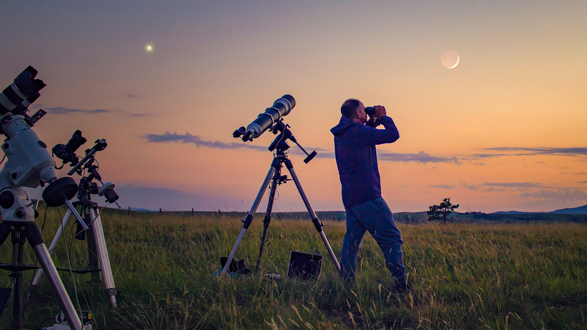
The universe is filled with information that human eyes cannot detect. Most cosmic events emit energy beyond visible light, meaning that without telescopes, much of space would remain unknown. Telescopes act as extensions of human senses, allowing scientists to observe the universe far beyond natural biological limits.
Modern telescopes are designed to detect different forms of electromagnetic radiation, including radio waves, infrared, visible light, ultraviolet, X-rays, and gamma rays. Each type of radiation reveals unique details about celestial objects, from cold gas clouds and forming stars to powerful explosions and black hole activity. By observing across these wavelengths, astronomers can study space in far greater depth and accuracy.
Together, these advanced instruments transform invisible signals into meaningful data. Telescopes do more than capture images—they uncover the structure, energy, and history of the universe. Through their ability to detect what cannot be seen, telescopes have become essential tools for understanding how the cosmos works and how it has evolved over billions of years.
Human vision captures only a tiny fraction of the information carried by the universe. Most cosmic activity occurs beyond the visible spectrum, making specialized telescopes essential for modern astronomy. By detecting different types of electromagnetic radiation—radio waves, infrared, visible light, ultraviolet, X-rays, and gamma rays—telescopes allow scientists to observe phenomena that would otherwise remain completely hidden. Each wavelength provides a unique window into the physical processes shaping the universe, transforming telescopes into instruments that extend human perception far beyond biological limits.
Radio and infrared telescopes are particularly valuable for studying cold and obscured regions of space. Radio telescopes detect long-wavelength signals emitted by neutral hydrogen, pulsars, and cosmic microwave background radiation, offering insight into the early universe and large-scale cosmic structure. Infrared telescopes, on the other hand, can penetrate dense clouds of gas and dust that block visible light. This capability allows astronomers to observe star-forming regions, protoplanetary disks, and distant galaxies whose light has been stretched into infrared wavelengths by cosmic expansion. Together, these instruments reveal how stars and galaxies are born and evolve over time.
Ultraviolet, X-ray, and gamma-ray telescopes are designed to observe the most energetic and violent processes in the universe. Ultraviolet observations uncover hot, young stars and energetic stellar winds, while X-ray telescopes detect emissions from superheated gas near black holes, neutron stars, and supernova remnants. Gamma-ray telescopes observe the universe’s most extreme events, such as gamma-ray bursts and particle jets traveling near the speed of light. Because Earth’s atmosphere absorbs these high-energy wavelengths, many of these telescopes must operate in space, highlighting the critical role of space-based observatories in understanding extreme cosmic environments. No single telescope can fully explain the universe on its own. Modern astronomy relies on multiwavelength observation, combining data from different types of telescopes to construct a comprehensive understanding of celestial objects. For example, a galaxy may appear calm in visible light, actively forming stars in infrared, and violently energetic in X-rays due to a central black hole. By integrating observations across the electromagnetic spectrum, scientists can study structure, composition, temperature, motion, and energy flow within cosmic systems. This approach turns telescopes into complementary tools rather than isolated instruments. Because light takes time to travel across space, telescopes also allow astronomers to look back into the universe’s past. Observations of distant galaxies reveal conditions that existed billions of years ago, helping scientists reconstruct the timeline of cosmic evolution. Advances in telescope technology—such as adaptive optics, segmented mirrors, and space-based platforms—continue to push observational limits deeper into space and further back in time. Through these innovations, telescopes not only reveal what is invisible but also redefine humanity’s understanding of its origins and place in the cosmos.
Not everything in the universe can be observed through light alone. Some of the most influential objects in space, such as black holes and dark matter, emit little to no light, making them invisible to telescopes. To uncover these hidden forces, scientists rely on gravity—the universal force that shapes the motion of stars, planets, and galaxies.
By studying how objects move, astronomers can detect the presence of unseen mass. When stars orbit an empty-looking region or galaxies bend and stretch due to gravitational pull, these motions reveal that something massive must be there. This method allows scientists to identify invisible objects and measure their mass, even when no light is detected.
Gravity also helps scientists understand the large-scale structure of the universe. From galaxy rotation curves to gravitational lensing, the effects of gravity provide crucial evidence for dark matter and extreme objects like black holes. Through gravity, astronomers can map the unseen universe and uncover the hidden forces that shape cosmic evolution.
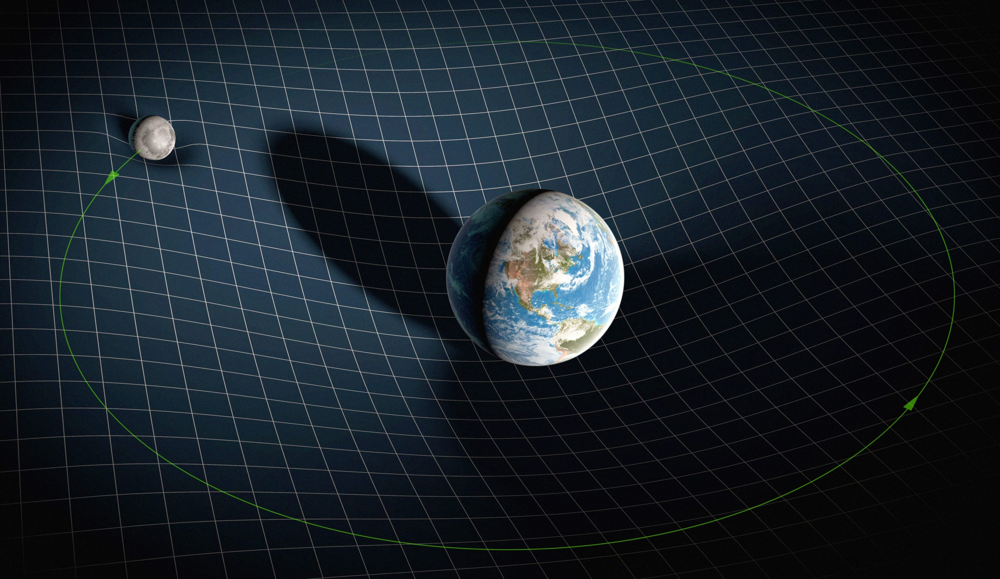
Massive objects like the Earth and Moon warp this fabric, creating "dips" or wells in the grid.
Gravity is the only fundamental force that acts on all forms of matter and energy, whether visible or invisible. Unlike light, which requires objects to emit or reflect radiation, gravity reveals itself through motion and distortion. From the smallest planetary systems to the largest cosmic structures, gravity governs how matter moves and organizes itself. Because it cannot be blocked or hidden, gravity becomes a powerful observational tool for studying regions of the universe that remain dark to traditional telescopes.
One of the most compelling applications of gravity is the detection of black holes. Black holes emit no light directly, yet their immense gravitational pull dominates their surroundings. Astronomers observe stars orbiting empty regions of space at extreme speeds, indicating the presence of a massive unseen object. By tracking these orbits over time, scientists can calculate the mass and size of black holes with extraordinary precision. Such observations have confirmed the existence of supermassive black holes at the centers of most galaxies, demonstrating that gravity alone can expose objects that are otherwise completely invisible.
On galactic scales, gravity provides critical evidence for dark matter, a mysterious substance that does not interact with light but exerts strong gravitational influence. Observations show that stars in galaxies rotate much faster than expected based on visible matter alone. Without additional unseen mass, galaxies would fly apart. This discrepancy indicates that dark matter forms vast halos around galaxies, shaping their structure and evolution. Gravitational lensing further supports this conclusion, as massive concentrations of dark matter bend and magnify light from distant galaxies, allowing scientists to map invisible matter across the universe.
Gravity also plays a central role in understanding the large-scale structure of the cosmos. Galaxy clusters, filaments, and voids form a vast cosmic web shaped by gravitational attraction over billions of years. Tiny fluctuations in matter density in the early universe grew under gravity’s influence, eventually forming stars, galaxies, and clusters. By studying how gravity drives this process, astronomers gain insight into the universe’s origin, composition, and long-term evolution. These gravitational patterns reveal how visible matter traces an underlying framework dominated by unseen forces.
In recent decades, gravity has become a direct observable phenomenon through the detection of gravitational waves. These ripples in spacetime, produced by events such as black hole mergers and neutron star collisions, carry information that cannot be obtained through light alone. Gravitational wave astronomy opens a new window into the universe, allowing scientists to study extreme events in complete darkness. Together with traditional observations, gravity provides a comprehensive method for exploring the universe, proving that even what cannot be seen can still be understood through its influence on space and time.
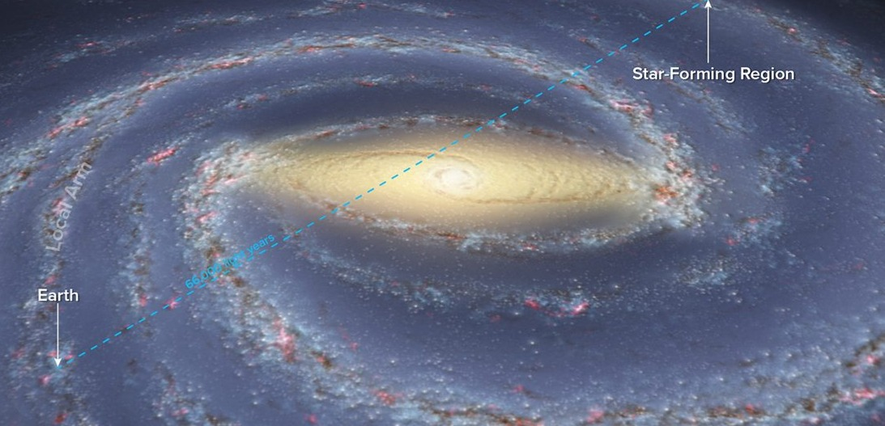
The universe is not seen in real time—it is seen in delay. Because light travels at a finite speed, every observation astronomers make is a glimpse into the past. When scientists observe distant stars or galaxies, they are seeing light that left those objects millions or even billions of years ago. Space, therefore, acts like a natural time machine, preserving moments from cosmic history in traveling light. Motion helps scientists turn this ancient light into measurable information. By tracking how celestial objects move—whether they rotate, orbit, or drift through space—astronomers can calculate their speed, distance, and mass. Changes in motion also reveal interactions between objects, such as gravitational pulls between stars or galaxies. These movements provide clues about how structures in the universe formed and evolved over time.
Time and motion together allow scientists to estimate the age of cosmic objects and events. The farther away an object is, the longer its light has traveled, meaning the older the image we receive. By combining motion data with light travel time, astronomers can reconstruct timelines of star formation, galaxy collisions, and even the expansion of the universe itself. Through motion and time, the universe tells its story—one frame at a time.
The universe is never observed as it exists in the present moment, but as it existed in the past. Because light travels at a finite speed, every photon reaching Earth carries a timestamp from the moment it was emitted. Nearby objects such as the Sun are seen almost instantly, while distant galaxies appear as they were millions or even billions of years ago. This inherent delay transforms space into a vast cosmic archive, where different distances correspond to different eras in the universe’s history. Astronomical observation, therefore, is not just spatial exploration but temporal investigation.
Motion provides the key to interpreting this ancient light. Celestial objects are rarely static; they orbit, rotate, expand, and interact under the influence of gravity. By carefully measuring changes in position and velocity, astronomers can infer fundamental properties such as mass, distance, and energy. Techniques such as Doppler shift analysis allow scientists to determine whether objects are moving toward or away from Earth, revealing rotation speeds of galaxies, orbital motion of stars, and the dynamics of entire galaxy clusters. Motion turns light into quantitative data, transforming visual observations into physical measurements.
Time plays a crucial role in connecting motion to cosmic evolution. The farther an object lies from Earth, the older the light we observe, allowing astronomers to compare different stages of cosmic development simultaneously. Nearby galaxies show mature structures, while distant galaxies appear younger, less organized, and more active. By studying these variations, scientists reconstruct timelines of star formation, galaxy growth, and structural change. This method allows the universe’s history to be studied not through simulation alone, but through direct observation across time.
Motion and time together also reveal the expansion of the universe. Observations show that distant galaxies are moving away from us, with more distant galaxies receding faster than nearby ones. This relationship demonstrates that space itself is expanding, not that galaxies are simply moving through a fixed background. By measuring this expansion rate and combining it with light travel time, astronomers estimate the age of the universe and trace its evolution from an early, dense state to its present structure. These measurements form the foundation of modern cosmology.
Through the combined study of motion and time, the universe becomes a dynamic narrative rather than a static image. Every orbit, collision, and expansion event contributes to a larger cosmic story written in delayed light and gravitational movement. Astronomers decode this story by analyzing how objects move and how long their light has traveled, allowing them to piece together events that occurred long before Earth existed. Motion and time transform the universe into a record of change, revealing not only where things are, but how they came to be.
Astronomy goes beyond simply watching the sky; it is a science built on prediction and verification. Scientists develop models to explain how celestial objects behave, using physical laws such as gravity, motion, and energy. These models act like blueprints of the universe, helping researchers understand complex systems that cannot be experimented on directly.
Mathematics plays a central role in turning ideas into testable predictions. Equations allow astronomers to calculate orbits, estimate masses, predict eclipses, and simulate cosmic events such as supernova explosions or galaxy collisions. With modern computers, these calculations become powerful simulations that recreate the universe across vast scales of space and time.
Testing is what separates scientific theories from speculation. Predictions made by models are compared with real observations from telescopes and satellites. When the data matches the predictions, confidence in the theory increases; when it does not, the model must be revised or replaced. Through this constant cycle of modeling, calculation, and testing, astronomy steadily moves closer to understanding how the universe truly works.
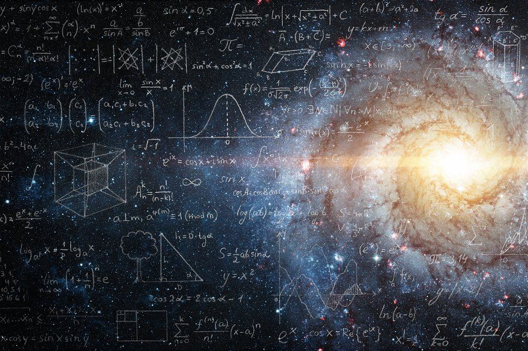
Once models are established, they are used to explore conditions that cannot be directly observed. Astronomers apply mathematical frameworks to simulate environments such as the cores of stars, the interiors of planets, and the regions near black holes. These models allow scientists to test how matter behaves under extreme temperature, pressure, and gravity. By adjusting variables and observing outcomes, researchers gain insight into processes that occur far beyond the reach of direct experimentation.
Large-scale simulations have become essential for studying the formation and evolution of cosmic structures. Using supercomputers, scientists model the behavior of billions of particles to recreate how galaxies, clusters, and cosmic filaments form over billions of years. These simulations help explain why galaxies have certain shapes, how dark matter influences structure, and how small variations in the early universe grew into the large-scale patterns observed today. Agreement between simulated results and real astronomical surveys strengthens confidence in current cosmological theories.
Mathematical modeling also enables astronomers to predict phenomena before they are observed. Planetary motions, stellar explosions, and even the existence of unseen objects can be inferred mathematically. The discovery of Neptune, for example, was guided by calculations based on gravitational disturbances, and similar techniques continue to reveal exoplanets and black holes today. These successes demonstrate that mathematics is not only descriptive but also a powerful predictive tool in astronomy.
Precision testing has become increasingly important as observational technology improves. Modern instruments can detect extremely small deviations in motion, brightness, and timing, allowing models to be tested with unprecedented accuracy. When discrepancies appear, they often lead to major scientific advances, such as the development of new theories or the refinement of existing ones. This process ensures that astronomical knowledge remains flexible and self-correcting rather than fixed or absolute.
Together, modeling, mathematics, and testing form the foundation of scientific confidence in astronomy. They allow scientists to move from observation to explanation, and from explanation to prediction. By continually comparing theory with evidence, astronomers refine their understanding of the universe and uncover deeper physical laws. This systematic approach transforms the study of space from observation alone into a rigorous science capable of explaining both what is seen and what remains unseen.